What TruthLens is
TruthLens scores video packaging, surfaces warnings, keeps a human review sheet close to the content, and can locally rerank a user’s feed so repeatedly problematic channels and patterns become less prominent.
TruthLens is a browser-extension and API initiative focused on misleading packaging in the age of synthetic promotion: clickbait, fake-news-like framing, deceptive thumbnails, and AI-mass-produced noise. It works locally on top of what a platform already shows the individual user.
TruthLens scores video packaging, surfaces warnings, keeps a human review sheet close to the content, and can locally rerank a user’s feed so repeatedly problematic channels and patterns become less prominent.
TruthLens does not control YouTube’s backend recommender. It does not claim automatic report submission today. The current reporting path is still explicitly human-initiated.
The internet is entering a period where synthetic promotion is becoming ordinary. As generative AI, machine learning, GAN-style image generation, LLM-assisted drafting, and image-editing tools become easier for anyone to use, it becomes easier than ever to make a thumbnail look like polished professional content — even when the actual video does not deliver what the packaging promises.
TruthLens exists because this is no longer only a technical problem. It is an incentive problem. If misleading packaging is rewarded with clicks, views, and attention, then honest presentation becomes comparatively less attractive. A healthy information ecosystem should make transparency easier to defend and deception less profitable.
TruthLens is built on the principle that protection against misleading content should not be locked behind a paywall.
The project is intended to remain free to use for any user who wants to install, test, or rely on it — both during the current beta phase and in a future public release.
This matters because the problem TruthLens addresses is not limited to a small group of technical users. Misleading thumbnails, clickbait strategies, fake-news-like packaging, synthetic media, and low-value AI-generated noise affect ordinary users directly. A tool designed to help people navigate that environment should therefore remain accessible to ordinary users as well.
TruthLens is also an open-source project. That is not only a licensing choice; it is part of the philosophy behind the initiative.
The project welcomes:
The goal is to build more than a tool. The goal is to build a public, transparent development space around the question:
TruthLens begins with YouTube because YouTube is one of the clearest places where thumbnails, titles, descriptions, channel behavior, and user attention collide. But the vision is broader than YouTube.
The same underlying problem exists across many internet platforms:
As more platforms become algorithmic attention streams, the risk increases that feeds become dominated by content engineered primarily to attract clicks rather than to represent truthfully what the user is about to consume.
TruthLens therefore aims, over time, to extend beyond one platform and into a broader ecosystem of feed-level transparency tools.
The long-term vision is to help push internet feeds back toward honesty, clarity, and usefulness — not by replacing creativity, satire, music, art, or expressive framing, but by reducing the reward for deceptive packaging.
In that sense, TruthLens fights fire with fire.
Many of the same technological forces that make misleading synthetic content easier to produce — machine learning, neural networks, visual analysis, language models, multimodal reasoning, and automated interpretation — can also be used to detect, explain, demote, and report that content.
TruthLens uses AI against the misuse of AI.
Not to censor the internet.
Not to flatten creativity.
Not to punish legitimate art, music, satire, or non-literal expression.
But to make deception less profitable, transparency more visible, and user attention less exploitable.
A central question behind TruthLens is simple: does clickbait survive and scale partly because too few users report content that should be reported? TruthLens is built on the working belief that the answer is often yes. Many users may recognize misleading packaging, but still avoid reporting it because the reporting process is slow, fragmented, cognitively demanding, or unclear.
TruthLens reduces that friction. It looks at the thumbnail, title, description, channel context, and available packaging signals, compares them as one combined interpretation, and drafts concrete field-specific comments for human review. The goal is not to remove the human from the loop. The goal is to make responsible reporting fast enough that honest users can realistically do it from the feed.
Modern tools make it simple to generate, edit, composite, upscale, and dramatize images. That can be legitimate creative work. It can also become visual bait: a professional, sensational, eye-candy surface that creates an expectation the underlying content does not satisfy.
Even honest creators can feel pressure to add a synthetic promotional layer because the feed rewards highly optimized visuals. Over time, that makes synthetic packaging look like the normal competitive baseline, even when a plain, honest frame from the actual content would be more transparent.
TruthLens does not treat every non-literal image as deception. A music thumbnail, album cover, artwork, satire frame, or game cover can be expressive without being misleading. The problem is sharper when the content is presented as documentary, news, factual explanation, product information, or evidence-sharing.
| Usually high-risk context | Usually protected creative context |
|---|---|
| News-like claims, documentary framing, evidence claims, fake urgency, fake official visual language, and factual explainer packaging. | Music, art, satire, gaming, tutorials, stylized covers, non-literal creative framing, and transparent artistic presentation. |
| A generated thumbnail that visually promises a concrete event, object, person, or claim the video does not deliver. | Artwork that sets mood, genre, tone, or identity without pretending to be literal evidence. |
A feed thumbnail works like a picture on a menu board. If the board shows a burger with gravy, the customer reasonably expects that product — not a ham sandwich with mayonnaise. Likewise, when documentary, news, or factual content is packaged with a specific visual promise, the user reasonably expects the video to deliver that promise.
TruthLens is not asking every thumbnail to be plain. It is asking the packaging to be proportionate to the content it claims to represent.
TruthLens is not meant to flatten honest creativity. It explicitly tries to preserve legitimate music, art, satire, gaming, tutorials, and other transparent non-literal formats instead of treating them like cheap deception.
TruthLens acts as a local user-side layer over the feed. It can warn, explain, suggest review, assist reporting, and rerank cards locally without claiming control over a platform’s backend ranking system.
TruthLens presents a user-facing score from 0.0 to 10.0. Higher means more likely honest and transparent. Lower means more likely clickbait, misleading, spam-like, or AI-mass-produced noise.
A TruthLens-assisted report today is still a human report. TruthLens can draft reasoning and help route the flow, but it does not claim autonomous mass reporting in the current public repo truth.
Misleading thumbnails and titles do not only waste attention. They can trigger avoidable video loads, short abandoned views, repeated searches, and extra streaming work when the user quickly discovers that the content does not match the expectation set by the packaging.
At large scale, that becomes a resource question as well as a user-experience question. If clearly misleading content is locally demoted, moderated, or eventually removed through responsible review, there is a plausible infrastructure upside: fewer wasted streams, fewer pointless video loads, and less compute and bandwidth spent on content the user never actually wanted.
Bias Structured Evolutionary Optimization was developed specifically for TruthLens while building the project. It is one of the core contributions TruthLens brings to applied AI: a way to treat bias as a structured policy signal instead of pretending that every useful system should be bias-free in the same way.
Conventional AI language often frames the goal as removing bias. For the problem TruthLens is solving, that is too simple. Feed quality is partly objective: a thumbnail can make a concrete promise the video does not deliver, a title can overstate evidence, and fake urgency can misrepresent the content. But feed quality is also subjective because one person’s personal feed is not the same as another person’s personal feed.
Ordinary recommender systems tend to optimize globally measurable behavior: clicks, watch time, retention, and engagement. BSEO asks a different question: how should a user-side AI layer structure preference, context, and risk when the user wants both protection from deception and preservation of legitimate creative expression?
Bias is treated like a two-sided signal rather than a one-sided flaw. There is no useful one-sided coin here: a bias can express what a user wants preserved, and it can also express what a user does not want amplified. BSEO uses that distinction to make bias a functional form of subjective weighting while keeping the runtime policy auditable.
In practice, BSEO stays downstream from core perception. The model can detect signals, but BSEO structures how those signals should influence policy: what should be demoted, what should be reported, what should be verified as transparent, and what should be preserved because the context makes non-literal framing legitimate.
That is why BSEO matters to TruthLens. It turns bias from an uncontrolled hidden weakness into an explicit, testable, artifact-guarded policy layer for personal feed transparency.
TruthLens is built for a world where misleading packaging, fake urgency, and synthetic content farms can dominate attention. The project tries to nudge the ecosystem in the opposite direction: less reward for deception, more reward for transparency.
The vision is not to punish creativity. It is to make the difference between legitimate creative framing and manipulative factual packaging visible, reviewable, and actionable.
TruthLens does not assume that every user wants the same feed. The goal is not to replace human preference with a rigid universal verdict, but to make user-controlled preference, risk, and transparency visible enough that the feed can be adjusted deliberately.
These screenshots show the current human-initiated flow. The user right-clicks a thumbnail or title, chooses a TruthLens action, reviews the generated evidence and comments, optionally optimizes wording with Gemini, and then manually confirms the final report or transparency verification.
Use this path when a feed card looks highly scored or polished but the packaging should still be reviewed as potentially misleading, clickbait, or mismatched to the actual content.
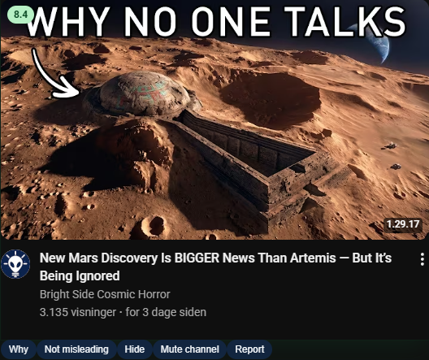
1. Start from the feed card. TruthLens shows the score and controls in context, but the user still decides whether to inspect it.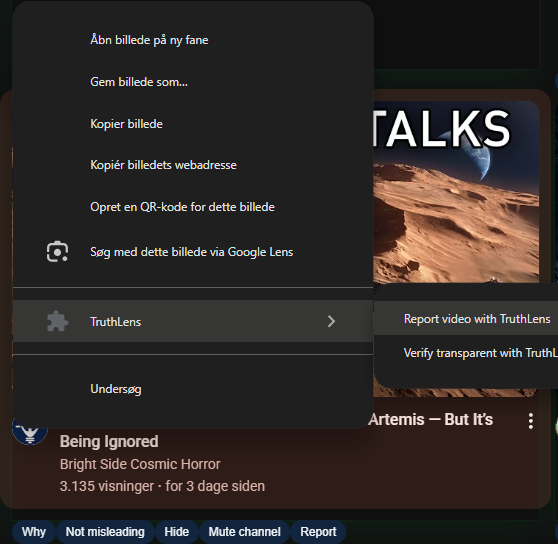
2. Open the explicit right-click action. The report sheet opens only after the user chooses Report video with TruthLens.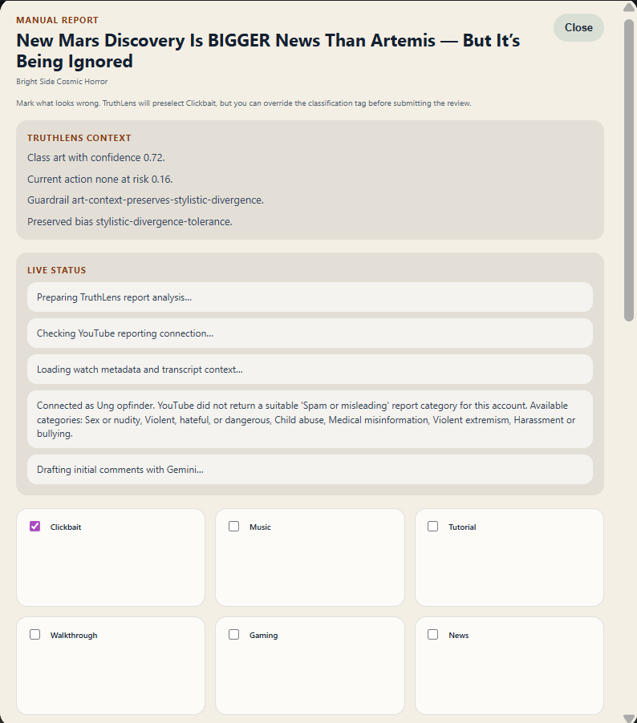
3. TruthLens gathers context. The sheet shows live processing while it checks reporting connection, metadata, transcript availability, and draft status.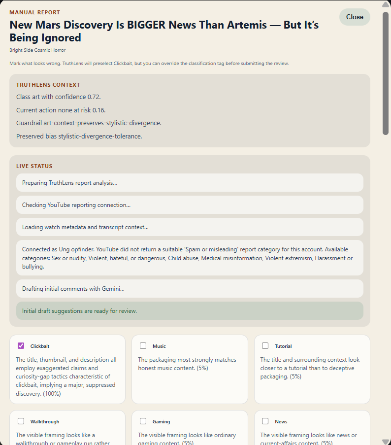
4. Review the draft rationale. TruthLens drafts field-specific comments for thumbnail, title, description, channel, and other packaging evidence.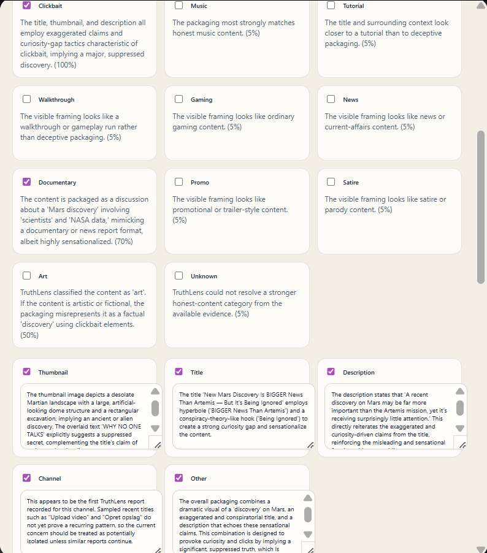
5. Adjust tags and issue comments. The user can keep, remove, or edit issue selections before anything is submitted.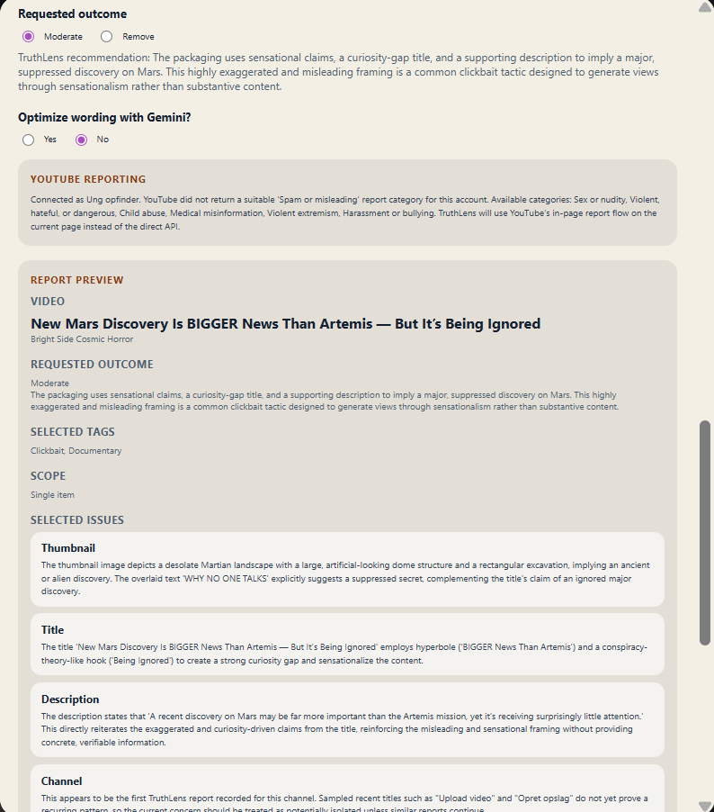
6. Inspect the final preview. The report preview keeps the requested outcome, selected tags, selected issues, and submission text visible.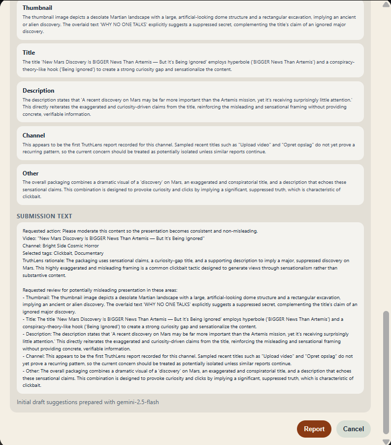
7. Confirm manually. The final Report button is a user action; TruthLens does not claim autonomous mass reporting in this beta.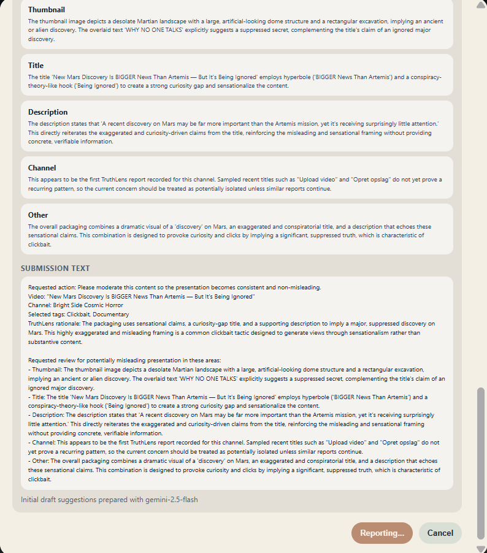
8. Submission proceeds after confirmation. The flow records that the report was TruthLens-assisted, but the final action remains manual.Use this path when the content appears honestly packaged, such as music or other transparent creative formats that TruthLens should learn to preserve rather than demote.
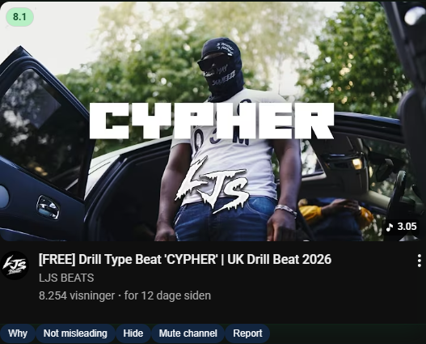
1. Identify a transparent card. A high score can still be manually verified when the packaging honestly matches the content class.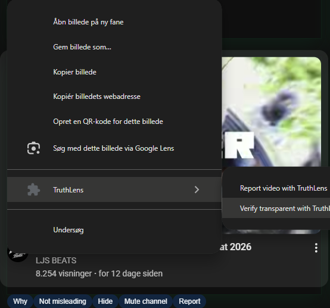
2. Choose Verify transparent. The verification sheet opens from explicit right-click selection, not from passive scoring.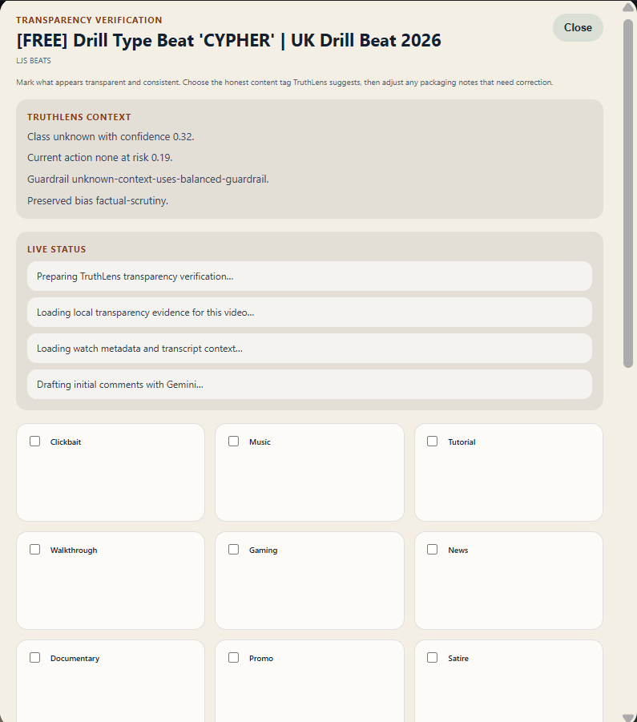
3. Let TruthLens prepare evidence. The sheet loads local transparency evidence, watch metadata, transcript context if available, and Gemini drafting.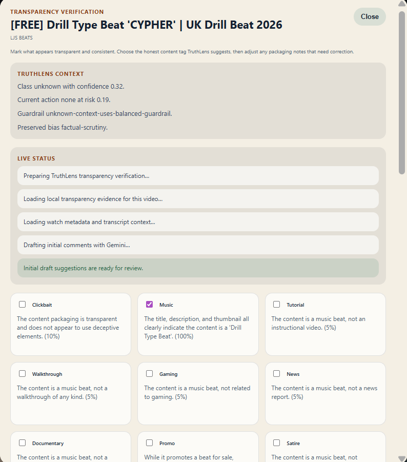
4. Review suggested positive tags. For this example, TruthLens identifies the content as music rather than clickbait or misleading factual packaging.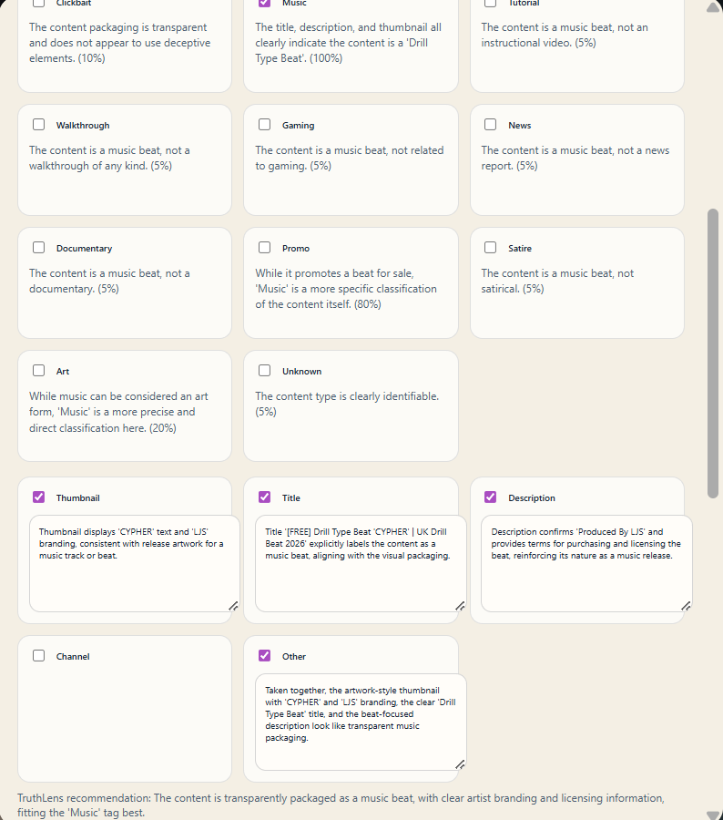
5. Edit positive evidence notes. The user can document why the thumbnail, title, description, and channel appear transparent.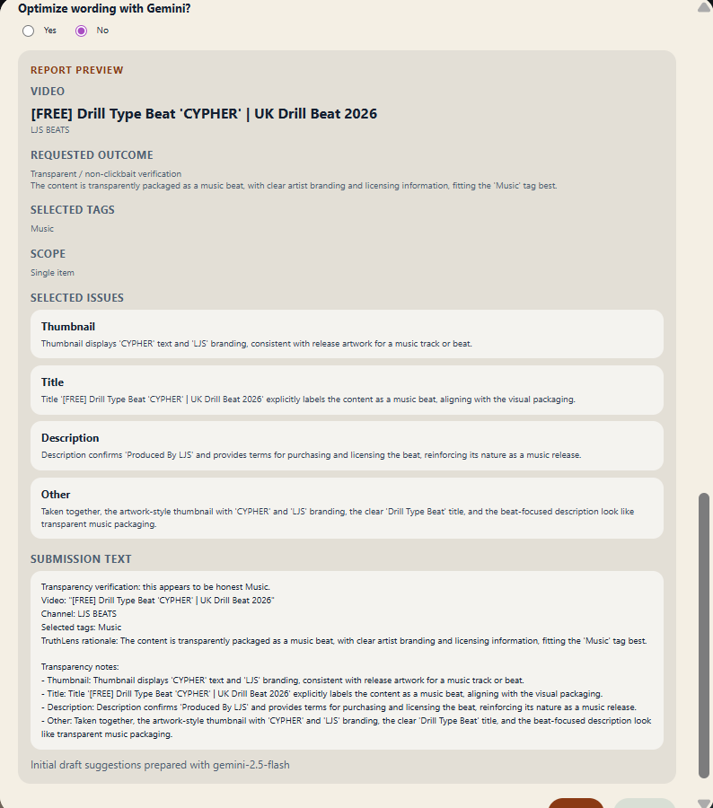
6. Inspect the verification preview. The preview records the positive rationale and selected tags before the user saves the verification.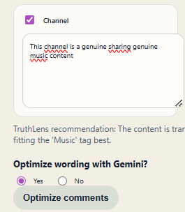
7. Optionally optimize wording. Gemini can help tighten the language, but the user chooses whether to run optimization.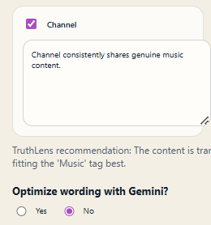
8. Review the optimized wording. Optimized comments remain editable and visible before the user confirms the verification.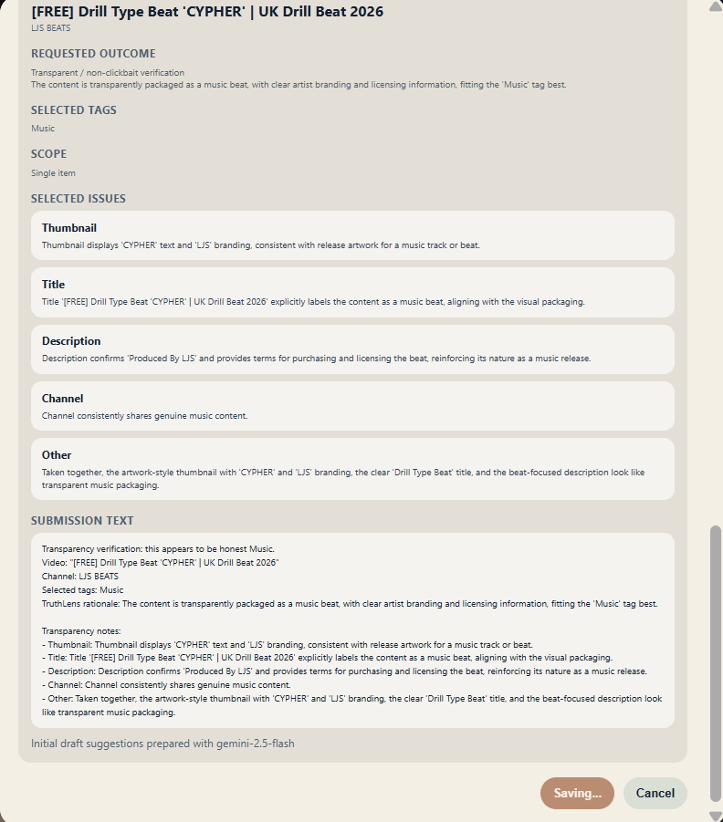
9. Save the verification. The final Verify action records positive transparency feedback for the local TruthLens workflow.TruthLens is a controlled hosted beta. The public repository documents current truth, benchmark artifacts, architecture, and verification surfaces. Broad public release and autonomous reporting are not claimed as live today.
This page is intended as the public-facing explanation layer; the repository remains the technical source of truth for code, docs, benchmarks, and deployment contracts.